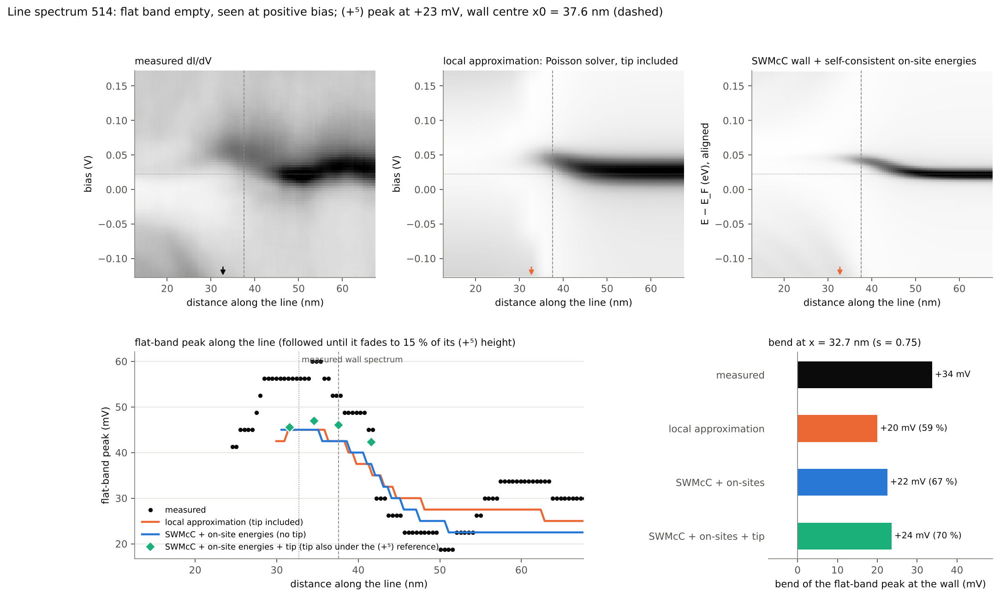
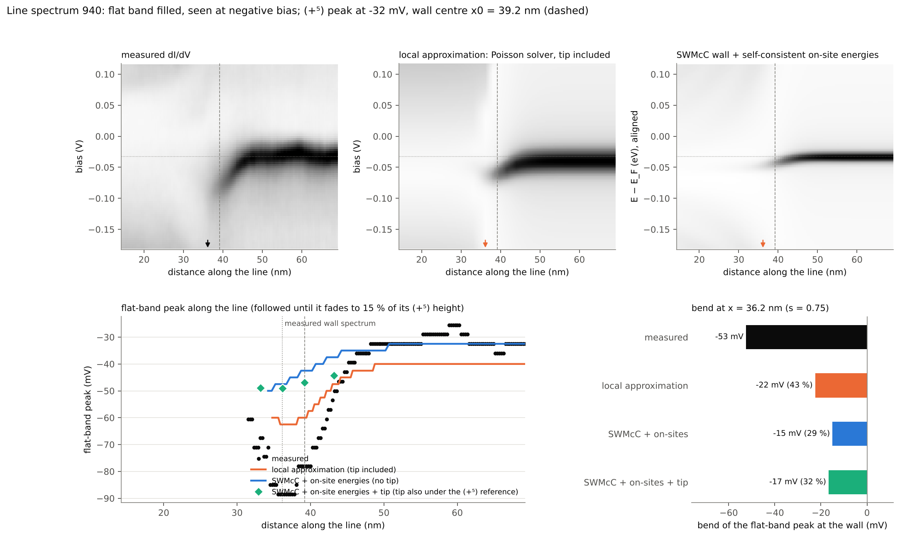
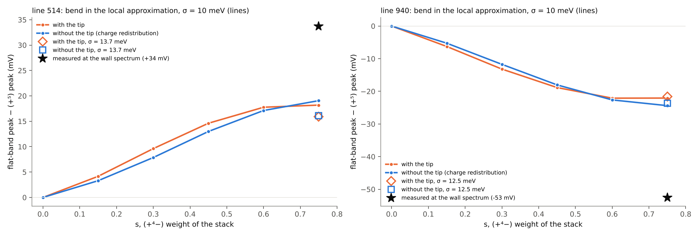
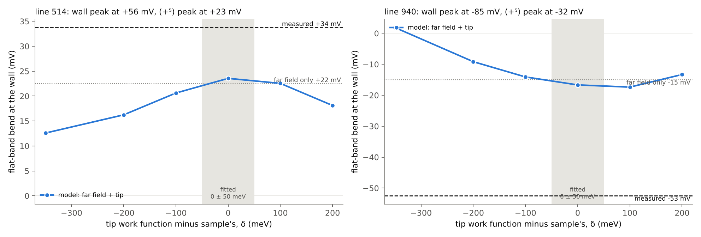
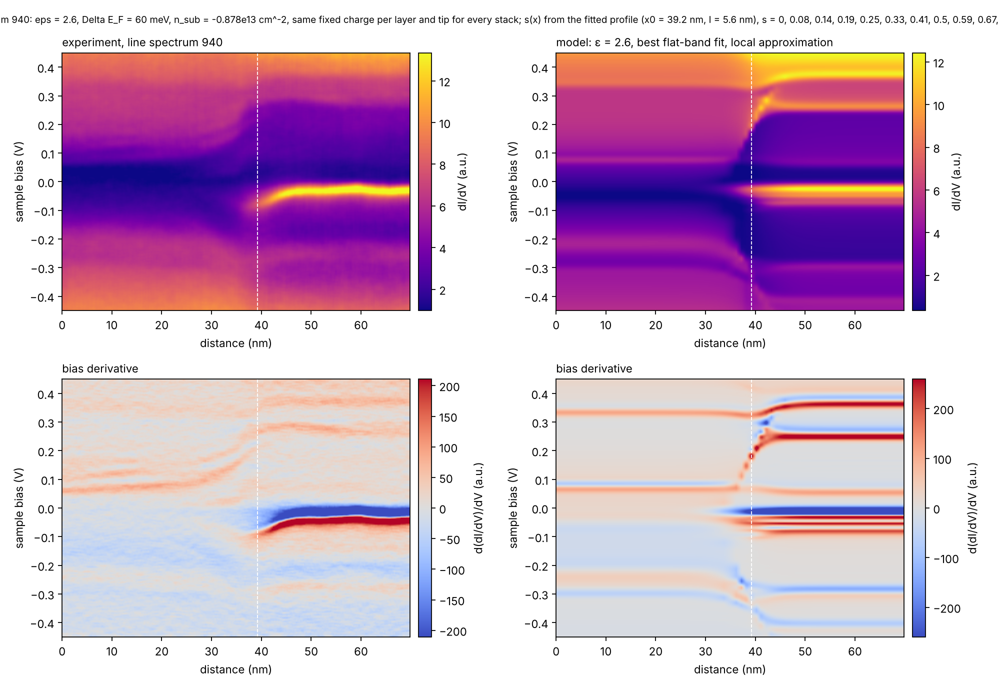
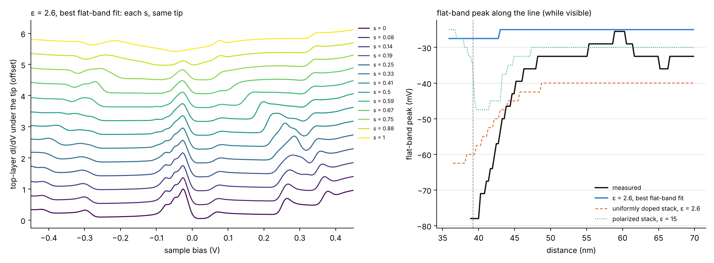
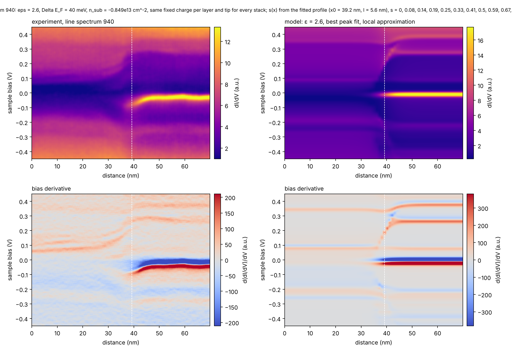
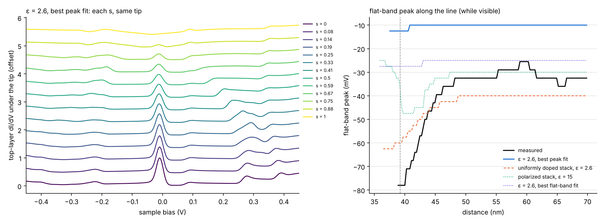
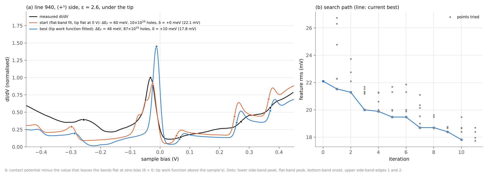

Flat-band bending at a stacking domain wall: what the models reproduce
Status report on the bend of the flat-band peak at the (+⁴−)|(+⁵) wall (flake MK_ABC_FLG_25, 9 K): the SWMcC wall model, the self-consistent Poisson solver of the bandbending engine, and their combination.
Abstract
Across the (+⁴−)|(+⁵) wall of six-layer rhombohedral graphite the flat-band peak bends away from EF as it fades: up by +34 mV in line 514, where the band is empty, and down by −53 mV in line 940, where it is filled, at the position of the wall spectrum (s = 0.75 of the fitted profile). The measurement looks like tip gating: per volt of bias the two bends are the same (a lever arm of 0.61 for both lines with one contact potential of −1 meV), and in 940 an edge seen at positive bias on the stacking-fault side rises by 50 to 90 mV next to the same wall where the flat band, seen at negative bias, sinks. A capacitor estimate gives both bends if the density of states at EF under the tip falls to about 5 × 10¹² eV⁻¹ cm⁻² at the wall while the (+⁵) side stays pinned.
The self-consistent model (Poisson equation with γ0/γ1 tight-binding stacks, tip work function fitted to the (+⁵) spectra, equal to the sample's within 0.05 eV) bends the flat band the measured way, but not by tip gating. Computed from the same self-consistent stacks with and without the tip, the bend at the wall spectrum is +18 and −22 mV with the tip and +19 and −24 mV without it: it is charge redistribution in the wall stack, which has lost most of its top-layer flat-band states and must move its bands to hold the same charge. The tip shifts the peaks (+3.6 and −6.9 mV on the (+⁵) stack), but by about as much at the wall as on the (+⁵) side, since its lever arm on the top layer is 0.11 to 0.16 on both; the bend keeps −0.9 and +2.3 mV of it. The SWMcC wall model with the self-consistent on-site energies gives the same picture (+22 and −15 mV, the tip adding +1.1 and −1.7 mV), with the fringes of the (+⁴−) side. In the SWMcC model with the tip-induced potential no tip work function within −350 to +200 meV of the sample's reaches the measured bend (the largest bends are +24 and −17 mV).
A bend from charge redistribution belongs to the sample: its sign follows the filling of the flat band, so it appears in both directions whatever the tip, which answers why the tip and sample work functions would otherwise have to agree within about 25 meV. In size it reaches 54 % (514) and 42 % (940) of the measured bend, and it depends on the doping model: with the doping compensated by charge in the SiO₂ (the polarized stack that fits the (+⁵) spectrum of 940 best at ε = 2.6) the wall's charge rearrangement becomes a dipole inside the stack and the bend falls to −2.5 mV. No model run produces the rising edge on the (+⁴−) side. Widening the Gaussian of the occupation and the LDOS from 10 meV to 13.7 and 12.5 meV, which gives the measured flat-band width (42 to 45 mV against 34 to 35 mV), leaves the lever arm at the wall at 0.12 and 0.14 and gives bends of +16 and −22 mV with the tip, +16 and −24 mV without it.
The status: charge redistribution gives the sign and about half the size of the bend; the rest, and the rising (+⁴−) edge, need a tip lever arm of about 0.6 at the wall. The model cannot get there by thinning the top layer: as long as the layer below has states at EF, it holds the top layer through the interlayer capacitance and caps the lever arm near 0.16, where the model sits, with or without a flat band widened to the measured width. A lever arm of 0.6 needs the tip's field to reach through the whole stack, with no layer under the apex holding states at EF (section 9). The measurement that separates the two mechanisms is the bend against the tip height at one wall: a tip-gating bend scales with the gap capacitance, a charge-redistribution bend does not.
Status in numbers
| flat-band bend at the wall | 514 | 940 | note |
|---|---|---|---|
| flat-band peak (+⁵) / at the wall spectrum, measured | +23 / +56 mV | −32 / −85 mV | |
| measured bend | +34 mV | −53 mV | at s = 0.75 of the fitted profile |
| lever arm of the tip on the top layer at the wall: needed / model | 0.61 / 0.11 | 0.61 / 0.14 | needed: one lever arm and one contact potential for both lines; model: top-layer bending at the wall-peak bias over that bias |
| local approximation with the tip / without the tip | +18.2 / +19.1 mV (54 / 56 %) | −22.1 / −24.4 mV (42 / 46 %) | same self-consistent stacks; centroids against the own (+⁵) peak |
| local approximation, flat band as wide as measured: with / without the tip | +15.9 / +16.1 mV (σ = 13.7 meV) | −21.6 / −23.7 mV (σ = 12.5 meV) | σ = 10 meV above |
| SWMcC wall + self-consistent on-site energies (no tip) | +22 mV (67 %) | −15 mV (29 %) | far-field charge balance |
| lever arm of the tip on the top layer far on the (+⁵) side, at its bias | 0.12 | 0.16 | |
| tip-induced shift of the peak at the wall / of the (+⁵) peak | +3.6 / +2.5 mV | −6.2 / −4.5 mV | SWMcC with the Gaussian bump, contact potential 0, each at its measured bias |
| tip-induced part of the bend: Gaussian bump / three-dimensional solve | +1.1 / +1.1 mV | −1.7 / +0.2 mV | shift at the wall minus shift of the (+⁵) reference |
| SWMcC + on-site energies + tip | +24 mV (70 %) | −17 mV (32 %) | |
| tip work function − sample's for the measured bend | not reached; largest +24 mV at +0 meV | not reached; largest −17 mV at +100 meV | offsets −350 to +200 meV computed; the (+⁵) fits allow 0 ± 50 meV |
| polarized stack, ε = 15 (unphysical permittivity) | – | −17.5 mV | local approximation, largest bend along the line |
| polarized stack, ε = 2.6, flat-band fit | – | −2.5 mV | local approximation, largest bend along the line |
| polarized stack, ε = 2.6, best peak fit | – | −2.5 mV | local approximation, largest bend along the line |

stacking_wall_summary_figure.py).
stacking_wall_summary_figure.py).1. The measurement and the SWMcC wall model
The k·p Slonczewski–Weiss–McClure Hamiltonian is linear in the momentum from the valley centre, HS(p) = CS + pxXS + pyYS, for both stackings S = (+⁵) ABCABC and (+⁴−) ABCABA. Across the wall every matrix element that differs (the γ1 dimer of the top layer, γ3, γ4, γ2, γ5 and the Δ′ terms of layers 5 and 6) follows one profile:
For every conserved ky the problem is diagonalised in plane waves along the wall normal (cell 480 nm, |q| ≤ 0.15 Å⁻¹, 229 waves per orbital; the second wall that periodicity needs is 240 nm away). The layer-resolved LDOS(E, x) sums the ky mesh (step 0.001 Å⁻¹) with spin, both valleys and a Gaussian of σ = 5 meV. Parameters of McEllistrim et al.: γ0 = 3.090, γ1 = 0.390, γ2 = -0.017, γ3 = 0.309, γ4 = 0.068, γ5 = 0.038, Δ′ = 0.025 eV. Without a wall the layer-summed LDOS equals the k·p DOS of the repository to 1 %, and a monolayer gives 2|E| / (πħ²v²) to 10⁻⁴. The k·p arrays are numbered from the bottom layer (the top-layer LDOS is the last), the engine's from the top; potentials passed from one to the other are reversed.
Wall length: every spectrum of a line is written as (1 − s) S(+⁴−)(V) + s S(+⁵)(V) with the end-member spectra averaged far from the wall (least squares over −0.3 … 0.3 V), and s(x) is fitted with the same tanh step. The flat-band weight within ±25 meV gives the same lengths within 0.5 nm. The model energy axis is shifted rigidly so that its (+⁵) flat band sits on the measured one.
| line spectrum | wall centre x0 | l (tanh) | 10–90 % width | flat band (+⁵) | model shift |
|---|---|---|---|---|---|
| MK_ABC_FLG_25_9K_2023_08_03_16_33_49_514.sm4 | 37.6 ± 0.2 nm | 8.8 ± 0.3 nm | 19.4 nm | +23 mV | +17.5 meV |
| MK_ABC_FLG_25_9K_2023_10_25_17_00_17_940.sm4 | 39.2 ± 0.0 nm | 5.6 ± 0.1 nm | 12.2 nm | -32 mV | -37.5 meV |


- The model has the flat-band peak on the (+⁵) surface; on the (+⁴−) surface it is absent and sits in layer 2
(layer-resolved maps in
examples/stacking_wall_layers_*.png). The (+⁵) gap faces the V-shaped surface band of (+⁴−). - Quasiparticle-interference fringes fan out from the wall on the (+⁴−) top layer only, as in Fig. 2 and 3 of the paper; none inside the (+⁵) gap.
- The fitted l is an apparent LDOS width that includes the lateral extent of the surface states, not the structural soliton width.
- Linear interpolation passes through a midpoint with both dimer couplings at γ1/2 rather than the saddle-point stacking of the real shift path.
- The k·p trigonal-warping legs extend to large momentum, so the LDOS is reliable within about ±0.4 eV.
2. The tip-gating estimate
Close to the wall the flat-band peak does not only fade, it moves: in spectrum 514, where the band is mostly empty and seen at positive bias, it climbs from +22 mV to about +55 mV; in spectrum 940, where it is mostly filled and seen at negative bias, it sinks from −32 mV to about −88 mV. The SWMcC model without electrostatics shifts it by only +5 meV in both cases, so the bend is not in the band structure of the wall.
The first explanation considered was tip gating. The tunnel junction is a capacitor with the sample as one plate; how much of the bias drops inside the sample depends on how easily the surface under the tip piles up or sheds charge. Far from the wall the flat band, about 10¹³ states per cm² within some 10 meV, makes the top layer a metal plate: the whole bias falls across the vacuum gap and the peak sits at its true energy. At the wall the flat-band states leave the top layer (on the stacking-fault side they sit in layer 2). If what is left under the tip were the Dirac cone of the (+⁴−) surface near its node, a fraction f of the bias would drop inside the sample and shift the local bands by f·eV: up at positive bias, down at negative bias, so that an empty band (seen at positive bias) bends up and a filled one bends down, with Vapp = EFB / [e(1 − f)].
| line spectrum | flat band far from the wall | at one third peak height | shift | f = 1 − Vfar/Vapp |
|---|---|---|---|---|
| 514 (band mostly empty) | +22 mV | +49 to +60 mV | +27 to +38 mV | 0.54 to 0.62 |
| 940 (band mostly filled) | −32 mV | −88 mV | −56 mV | 0.63 |
Scale: a 0.7 nm gap gives Cgap = ε₀/d ≈ 13 mF m⁻². The intact flat band has Cq = e²D ≈ 1.6 F m⁻², so f ≈ 0.01: the band is pinned. f ≈ 0.6 needs Cq ≈ 9 mF m⁻², D(EF) ≈ 5 × 10¹² eV⁻¹ cm⁻², the value of the (+⁴−) surface cone 10 to 20 meV from its Dirac point. The estimate treats the top layer alone; the layers below hold its potential as well (section 9), so the same holds for them. Both lines give the same f with opposite bias, and in 940 an edge on the stacking-fault side at positive bias rises by 50 to 90 mV next to the same wall where the flat band at negative bias sinks; a rigid offset of the bands, such as a polarization of the (+⁴−) stack, would move both the same way. The estimate leaves open whether the density of states under the tip really falls that far while the flat-band peak is still visible. The self-consistent calculation below tests it, and at the fitted work function it does not find it: the top layer keeps about a quarter of its flat-band states at s = 0.75 and the tip moves the peak by a few millivolts.
3. Self-consistent electrostatics: the model, the (+⁵) fit and the tip work function
Laterally uniform six-layer stacks under the tip, each solved self-consistently (Poisson equation with
Hartree + γ0/γ1 tight-binding layers, GrapheneMultilayer of the
bandbending engine): the (+⁵) stack, the wall stack with the
top dimer shared between the (+⁵) bond (weight 1 − s) and the (+⁴−) bond (weight s; s = 0.75 at the position of
the measured wall spectrum), and the (+⁴−) stack. The wall Hamiltonian closes a bond loop whose flux is the phase of
the structure factor, so it is evaluated with a complex Hamiltonian averaged over that phase (WallTB in
stacking_wall_tibb.py; it reproduces the engine's end members exactly and a brute-force zone sum to
1 %). Tip radius 20 nm, separation 0.7 nm, barrier 4.6 eV,
9 K, Gaussian width 10 meV of the tight-binding occupation and LDOS (the
bare γ0/γ1 flat band is 6 meV wide; with this Gaussian the simulated (+⁵) peak is 34 to 35 mV wide at half
maximum, the measured one 42 to 45 mV), lock-in 3.75 mV; 90 nm SiO₂ over the
grounded Si. The doping is set from the measured flat-band energy of the (+⁵) side (the isolated stack is neutral with
EF that far from its flat band); the fixed charge per layer this implies is used unchanged for the wall and
the (+⁴−) stack. The tip contact potential is the value, scanned in 0.1 eV steps, at which the simulated (+⁵)
spectrum (tunneling_spectrum: frozen-potential term plus band-bending term) is closest to the
measurement, one scale factor free.
| line spectrum | contact potential | EF − ECNP | flat band (+⁵): measured / simulated | flat band at the wall: measured / simulated | U1(apex) − U1(far) at the peak: (+⁵) / wall / (+⁴−) | residual (+⁵) / wall / (+⁴−) |
|---|---|---|---|---|---|---|
| 514 | +0.00 eV | -23 meV | +23 / +25 mV | +56 / +45 mV | +3 / +4 / -16 meV | 0.32 / 0.34 / 0.38 |
| 940 | +0.00 eV | +32 meV | -32 / -40 mV | -85 / -62 mV | -7 / -7 / +15 meV | 0.32 / 0.36 / 0.27 |

Tip work function. No absolute work function enters the electrostatics. The engine takes the contact potential CPot = Wtip − Wref, with Wref the depth of the stack's charge-neutrality point below vacuum, and places the tip at Utip = V + CPot; a positive CPot acts like a positive bias and bends the bands up at V = 0. CPot was the fit parameter of the (+⁵) spectra, scanned in 0.1 eV steps, and came out at +0.00 eV for 514 and +0.00 eV for 940; the simulated flat-band peak moves by 16 mV per 0.1 eV (514), 20 mV per 0.1 eV (940), so the fit holds it to about ±0.05 eV. The reference is the neutrality point, not the Fermi level: the sample's own work function differs from Wref by the doping offset, -23 meV (514) and +32 meV (940), so tip and sample work functions are equal within a few tens of meV. The 4.6 eV barrier of the simulated spectra enters only the WKB transmission factor, not the band bending.
The data constrain the same quantity without any solver. In the tip-gating picture a feature measured at bias V shifts in proportion to V + CPot, so the flat band seen at positive bias bends up only if CPot > −V and the one seen at negative bias bends down only if CPot < −V: with the far-field flat bands at +23 and -32 mV this is -23 < CPot < +32 meV, with the peaks at the wall (+56 and -85 mV) -56 < CPot < +85 meV. A tip whose work function exceeded the sample's by more than about 0.1 eV would make the downward bend impossible in that picture, one below it by more than about 0.05 eV the upward bend; this holds separately for the two tips if they differed. In the self-consistent calculation, however, most of the simulated bend comes from the charge balance of the wall stack, whose sign follows the filling of the flat band and not the tip: there a large contact potential would move both flat bands the same way (and the far-field peaks with them) instead of forbidding one bend. Measuring the same wall with tips of different work function separates the two: the tip-gating bend changes sign when the flat-band voltage crosses the flat-band bias, the charge-balance bend does not. For comparison, the engine's authors found an effective contact potential of about +0.1 eV for Au and PtIr tips on rhombohedral graphite, and vacuum work-function differences (Pt: +1.05 eV) overestimate the tip field several times.
The asymmetry of the bends. The flat band bends up by 34 mV in 514 (from +23 mV far on the (+⁵) side to +56 mV at the wall) and down by 53 mV in 940 (from −32 to −85 mV): the downward bend is 1.56 times the upward one. This does not point to a contact potential. Per volt of bias the two bends are the same, 0.60 and 0.62: the flat band of 940 lies further from EF and is seen at a larger bias, so it bends more. In the tip-gating picture a feature at energy E0 appears at the bias V with V(1 − α) = E0 + α CPot; one lever arm α and one CPot for both lines fit the two bends exactly with α = 0.61 and CPot = −1 meV (no band bending at +1 mV). Moving each of the four positions by half a bias step (±1.87 mV) gives CPot from −5 to +3 meV, and lever arms differing by up to 25 % between the two walls from −8 to +7 meV. The ratio of the bends is very sensitive to CPot (upward and downward bend at the measured biases: CPot −50 meV: +4 and −82 mV; CPot 0 meV: +34 and −52 mV; CPot +50 meV: +65 and −21 mV): a tip whose work function exceeded the sample's would favour the upward bend, a lower one the downward bend. Read this way, tip and sample work functions agree within about 10 meV, in line with CPot = 0 ± 0.05 eV from the (+⁵) spectra and far from the +1.05 eV of a vacuum Pt tip. Two qualifications. The fit assumes one tip for both lines, which were recorded on different days; with different tips each line gives only the bound above. And it needs 61 % of the bias to drop in the sample, while the self-consistent calculation bends the top layer at the wall by only +4 and −7 meV at the peak bias. The self-consistent model at CPot = 0 also bends the band further down than up (simulated −22 against +20 mV, ratio 1.13), through the charge balance of the wall stack, which grows with the distance of the far-field flat band from EF (1.44 times larger in 940). Under either mechanism the asymmetry follows from the different doping of the two regions and needs no contact potential.
4. Across the wall in the local approximation
What the calculation gives. With the tip and the doping fixed on the (+⁵) side, the simulated flat-band peak at the wall moves in the measured direction for both fillings: up by +20 mV in spectrum 514 (measured +34 mV) and down by -22 mV in spectrum 940 (measured -53 mV), so the sign follows the filling as observed, with 59 % and 43 % of the measured size. The tip, however, is not what moves it in this model: the band bending under the apex at the flat-band bias is +3 meV far on the (+⁵) side and +4 meV at the wall in 514, -7 and -7 meV in 940, so the tip-induced part of the shift is at most a few meV. At s = 0.75 the top layer keeps about a quarter of its flat-band states (4 × 10¹³ eV⁻¹ cm⁻² at EF with the 10 meV width), still a far better screen than the 0.013 F m⁻² of the vacuum gap, and the self-consistent solution confirms the pinning. The simulated shift comes instead from the charge balance of the wall stack: with the same fixed charge per layer, a top layer that has lost most of its flat-band states must move its bands to hold that charge (-8 meV in 514, +11 meV in 940, up for the empty band and down for the filled one), and the remaining top-layer weight sits on the far flank of the band, which adds the rest. The frozen-potential term alone (dashed) reproduces the full simulated peak position.
The (+⁴−) side. The simulated (+⁴−) spectra have the measured V shape (residuals 0.38 and 0.27), but their minimum sits at +50 mV (514) and -62 mV (940) where the measured minima are at +4 and +34 mV: the same fixed charge per layer puts the (+⁴−) Fermi level 30 to 40 meV from its neutrality point, while the real stacking-fault region sits near neutrality because its compensating charge can move into the buried flat band. The per-layer charge was the only way to place the (+⁵) flat band at the measured energy in this γ0/γ1 model (substrate traps alone pin it at EF); transferred to the other stacks it overstates their band offsets, so the intrinsic shift it produces at the wall is an upper estimate.
Across the wall. The wall stack was then solved at s = 0.15, 0.30, 0.45, 0.60, 0.75 and 0.90 with the same tip and doping (50 mV bias steps), and the simulated top-layer dI/dV was placed along the measured line through the fitted profile s(x) = [1 − tanh((x − x0)/l)]/2, interpolated linearly between the s values with one global scale. The simulated maps reproduce the sequence of the measurement: the flat band of the (+⁵) side bends up (514) or down (940) as it fades into the wall, the (+⁵) gap edges at ±0.2 to 0.3 V give way to the V-shaped spectrum of the (+⁴−) side, and there are no fringes, since the local approximation has no lateral scattering. Two differences stand out: the simulated flat band disappears over a shorter distance than the measured one, because in the γ0/γ1 model the top layer keeps most of its flat-band weight until s ≈ 0.75, and the simulated (+⁴−) side keeps the Dirac-point offset discussed above.
| s | peak 514 / height | peak 940 / height |
|---|---|---|
| 0.00 | +25 mV / 1.00 | -40 mV / 1.00 |
| 0.15 | +30 mV / 0.89 | -48 mV / 0.91 |
| 0.30 | +35 mV / 0.76 | -52 mV / 0.80 |
| 0.45 | +40 mV / 0.62 | -58 mV / 0.65 |
| 0.60 | +45 mV / 0.46 | -62 mV / 0.47 |
| 0.75 | +45 mV / 0.28 | -62 mV / 0.28 |
| 0.90 | -65 mV / 0.17 | +58 mV / 0.20 |
Simulated flat-band peak of the wall stack against the (+⁴−) weight s, with its height relative to the (+⁵) stack; beyond s ≈ 0.8 the top-layer peak is gone and the maximum found is another feature.


5. The SWMcC wall model with the self-consistent on-site energies
The two calculations are complementary: the k·p wall model has the wall and its fringes but no electrostatics,
the Poisson solver has the electrostatics but, being axisymmetric, no wall. The notebook
examples/stacking_wall_hybrid.ipynb joins them: it reads the Poisson outputs, refers the far-field
layer potentials of every stack to the common Fermi level, Vl = Ufar,l − μ0, places them
along the measured line through the fitted profile s(x), and feeds them into the k·p wall model as
position-dependent on-site energies (layer_potential_profile of stacking_wall.ldos_wall).
The tip-induced part of the potential moves with the tip and is left out of the maps (the notebook adds it at
chosen tip positions on request). The fringes of the (+⁴−) side return, together with the band shift of the
stacks.
At the position of the measured wall spectrum the flat-band peak sits at +56 mV measured, +45 mV in the local approximation and +45 mV in the hybrid for 514; -85, -62 and -47 mV for 940. The top-layer potential of the stacks moves from +23 to +58 meV (514) and from -32 to -77 meV (940) between s = 0 and 0.75, and the k·p flat band near the wall follows it. Measured from the far (+⁵) peak of each description, the bend at the wall is +22 mV in the hybrid against +20 mV in the local approximation and +34 mV measured (514), -15, -22 and -53 mV (940). The two descriptions of the wall agree to within 2 mV (514) and 7 mV (940): the k·p wall, with its fringes and remote hoppings, changes little of what the far-field potentials of the stacks do to the flat band, and both fall short of the measured bend, by a third in 514 and by more than half in 940.
Correction (2026-11-09). The first version of this section passed the engine's layer potentials to the
k·p model in the wrong order: the engine numbers the layers from the top, the k·p model from the bottom, so the k·p
top layer carried the potential of the bottom layer, which barely moves across the wall. The hybrid then bent by
+10 mV (514) and 0 mV (940) at the wall, and the shortfall against the local approximation was put down to the
k·p flat-band state spreading into the lower layers. That explanation was wrong. The maps, the tip-induced bump
and the k·p spectra of the lateral solve below are recomputed with the order fixed
(stacking_wall.ldos_wall now states the order; a regression test checks it).


6. Charge redistribution and tip-induced bending separated
Every stack of the local approximation was evaluated twice from the same self-consistent sweep: with
the layer potentials under the apex, U0(V), as in the maps, and with the far-field potentials Ufar of the
same stack at every bias, which contain the charge redistribution of the stack but no tip
(stacking_wall_separation.py). The bend is the shift of the flat-band peak (its centroid) from that of the
(+⁵) stack under the same conditions. At the position of the wall spectrum (s = 0.75) the bend is
+18 mV with the tip and +19 mV without it in 514, −22 and
−24 mV in 940 (measured +34 and −53 mV): the bend of the model is charge
redistribution, and the tip changes it by −0.9 and
+2.3 mV. The tip does move the peaks, by +3.6 and
−6.9 mV on the (+⁵) stack at its bias, but by about as much at the wall, so the bend, a difference,
keeps little of it. The lever arm of the tip on the top layer is 0.12 and 0.16
on the (+⁵) stack at its bias and 0.11 and 0.14 at the wall at the
wall-peak bias.
| line | s | bend with the tip | without the tip | tip-induced part |
|---|---|---|---|---|
| 514 | 0.00 | +0.0 mV | +0.0 mV | +0.0 mV |
| 514 | 0.15 | +4.2 mV | +3.3 mV | +0.9 mV |
| 514 | 0.30 | +9.6 mV | +7.9 mV | +1.8 mV |
| 514 | 0.45 | +14.6 mV | +13.0 mV | +1.6 mV |
| 514 | 0.60 | +17.8 mV | +17.1 mV | +0.6 mV |
| 514 | 0.75 | +18.2 mV | +19.1 mV | −0.9 mV |
| 514 | 0.90 | flat-band peak faded | ||
| 514 | 1.00 | flat-band peak faded | ||
| 940 | 0.00 | +0.0 mV | +0.0 mV | +0.0 mV |
| 940 | 0.15 | −6.3 mV | −5.3 mV | −1.0 mV |
| 940 | 0.30 | −13.2 mV | −11.7 mV | −1.5 mV |
| 940 | 0.45 | −18.8 mV | −18.0 mV | −0.8 mV |
| 940 | 0.60 | −22.1 mV | −22.6 mV | +0.5 mV |
| 940 | 0.75 | −22.1 mV | −24.4 mV | +2.3 mV |
| 940 | 0.90 | flat-band peak faded | ||
| 940 | 1.00 | flat-band peak faded | ||
A flat band as wide as the measured one. With the Gaussian of 10 meV used so far the
simulated (+⁵) peak is 34 and 35 mV wide at half
maximum, the measured one 45 (514) and 42 mV (940).
σ = 13.7 and 12.5 meV reproduce the measured widths
(stacking_wall_separation.py calibrate), and the (+⁵) stack and the wall stacks were solved again with
that σ in the occupation as well as in the spectrum, so that the screening sees the wider band (contact potential 0,
biases ±0.2 V in 25 mV steps; stacking_wall_separation.py wide). The lever arm of the tip on the top
layer at the wall goes from 0.11 to 0.12 (514) and from
0.14 to 0.14 (940); on the (+⁵) side, at its own bias, from
0.12 to 0.11 and from 0.16 to 0.15.
At s = 0.75 the flat band bends by +16 mV with the tip and +16 mV without it in
514 (σ = 10 meV: +18 and +19 mV), −22 and −24 mV in 940
(−22 and −24 mV); measured +34 and −53 mV.
| line | σ | s | bend with the tip | without the tip | tip-induced part | peak height (of (+⁵)) |
|---|---|---|---|---|---|---|
| 514 | 13.7 meV | 0.75 | +15.9 mV | +16.1 mV | −0.2 mV | 26 % |
| 940 | 12.5 meV | 0.75 | −21.6 mV | −23.7 mV | +2.1 mV | 27 % |

Why the bend needs no tuned work function in this picture. A bend from charge redistribution belongs to the sample: its sign follows the filling of the flat band, up where the band is empty and down where it is filled, whatever the tip. Pure tip gating with a lever arm confined to the wall gives a bend whose sign is that of the bias measured from the zero-TIBB bias, −CPot; seeing an upward bend at +23 mV and a downward one at −32 mV then requires |CPot| below about 25 meV. Even when the tip does gate, with the same lever arm α at the wall and on the (+⁵) side, the apparent energies are V = (E + α CPot)/(1 − α), and the bend, Vwall − V(+⁵) = (Ewall − E(+⁵))/(1 − α), no longer contains CPot: a uniform lever arm only magnifies the intrinsic shift. The contact potential matters only through a lever arm that differs between the wall and the (+⁵) side, and that is the situation the self-consistent model does not produce.
7. The tip's own field in the SWMcC model
The tip-induced bump
The Poisson solver also gives the potential under the apex, U0,l(V) − U_far,l, which moves with the tip. It is
added to the hybrid as a Gaussian bump of width w = √(2Rd) = 5.3 nm centred on the tip, with the
amplitude of the stack at s(x_tip) at the bias where the flat-band peak is measured at the wall (+56 mV (514), -85 mV (940)), and the
wall model is solved once per tip position (cell 300 nm, k_y step 0.002 Å⁻¹, 6 meV
broadening; stacking_wall_tibb_bump.py). The table gives the apparent flat-band peak under the tip
without and with the bump (the energy grid of the peak is 2.5 meV; the centroid of the peak resolves below that);
the largest change the bump makes to the peak centroid is 7.3 mV (514), 11.4 mV (940), against a measured bend of 35 to 55 mV. The k·p flat band follows 39 to 80 % of the top-layer bump, more on the (+⁵) side, where the flat-band state lives on the top layer, than inside the wall. At the position of the measured wall spectrum (-4.9 nm from the wall centre in 514, -3.1 nm in 940) the bump shifts the centroid by +3.6 and -6.2 mV. The bend, however, is measured against the (+⁵) peak, which the tip also shifts, at its own bias: by +2.5 mV (514) and -4.5 mV (940) with the tip 20 nm into the (+⁵) side (stacking_wall_cpot_sensitivity.py, δ = 0). There the flat band is a top-layer state and follows the whole bump; inside the wall it follows about half. The tip's contribution to the bend is the difference, +1.1 mV (514) and -1.7 mV (940): the hybrid bends by +22 mV without and +24 mV with the tip's own field in 514 (measured +34 mV), -15 and -17 mV in 940 (measured -53 mV). In this model the tip moves the flat band nearly as much far from the wall as at it, and its own field is not what bends the band.
(Before the layer-order correction the bump sat on the bottom layer and moved the peak by at most 2.5 mV; the
version of 2026-11-10 then added the shift at the wall to the bend without subtracting the shift of the (+⁵) reference,
which overstated the tip's contribution as +4 and −6 mV.)
| line | tip from the wall centre | s at the tip | top-layer bump | peak without / with bump | change of the maximum | change of the centroid |
|---|---|---|---|---|---|---|
| 514 | -10 nm | 0.91 | +5 meV | flat-band peak faded (height below 15 % of the far value) | ||
| 514 | -6 nm | 0.80 | +6 meV | +45 / +48 mV | +2.5 mV | +3.0 mV |
| 514 | -3 nm | 0.66 | +7 meV | +45 / +48 mV | +2.5 mV | +4.4 mV |
| 514 | +0 nm | 0.50 | +9 meV | +43 / +48 mV | +5.0 mV | +6.0 mV |
| 514 | +4 nm | 0.29 | +9 meV | +38 / +45 mV | +7.5 mV | +7.3 mV |
| 940 | -10 nm | 0.97 | -9 meV | flat-band peak faded (height below 15 % of the far value) | ||
| 940 | -6 nm | 0.90 | -9 meV | -50 / -52 mV | -2.5 mV | -3.5 mV |
| 940 | -3 nm | 0.75 | -12 meV | -47 / -52 mV | -5.0 mV | -6.3 mV |
| 940 | +0 nm | 0.50 | -14 meV | -42 / -52 mV | -10.0 mV | -9.0 mV |
| 940 | +4 nm | 0.19 | -15 meV | -37 / -47 mV | -10.0 mV | -11.4 mV |

Sensitivity to the tip work function
The tip-induced numbers above take the tip work function equal to the sample's: CPot = 0, so the tip does not bend the (+⁵) bands at zero bias. That value is fitted, not assumed. The contact-potential scan of the (+⁵) spectra has its lowest residual at zero for both lines (514: 0.32 at 0 against 0.39 at −0.1 eV and 0.40 at +0.1 eV; 940: 0.32 at 0 against 0.49 at −0.1 eV and 0.36 at +0.1 eV), which leaves CPot = 0 ± 0.05 eV; the ε = 2.6 polarized-stack fit of 940 with the offset free puts it at +10 meV; and if one tip recorded both lines, the asymmetry of the two bends gives −1 meV (−5 to +3 meV within half a bias step).
An offset δ of the tip work function from the sample's enters the electrostatics only through the tip potential,
Utip = V + δ, so the tip-induced bending at bias V is that of the fitted sweeps at V + δ. The k·p wall
model with the Gaussian bump was solved for δ from −350 to +200 meV (the bias range of the
sweeps sets the limits), with the tip at the position of the measured wall spectrum and far on the (+⁵) side, each at
its measured peak bias (stacking_wall_cpot_sensitivity.py). The tip-induced part of the bend is the
centroid shift at the wall minus that on the (+⁵) side; added to the far-field bend of the hybrid
(+22 mV in 514, −15 mV in 940) it gives the model bend in the
table and the figure. Near δ = 0 the bend changes by 1 mV (514) and -2 mV
(940) per 100 meV of offset, so the fitted ±50 meV moves it by at most 0 and
1 mV. The measured bend (+34 and −53 mV) is reached with
no offset in the computed range (the largest bend is +24 mV, at δ = +0 meV, 70 % of the measured) in 514 and no offset in the computed range (the largest bend is −17 mV, at δ = +100 meV, 33 % of the measured) in 940.
The tip moves the (+⁵) reference with the wall: there the flat band is a top-layer state and follows the whole
tip-induced potential, inside the wall it follows about half, so an offset that pulls the wall peak further also
pulls the reference, and the bend changes much less than either peak.
The lines were recorded on different days, possibly with different tips, but each line's own (+⁵) fit holds its tip
near zero: the residual at −0.2 / +0.2 eV is 0.45 / 0.53 in 514 and
0.59 / 0.45 in 940, against 0.32 and 0.32 at zero.
An offset of −0.2 eV would also move the (+⁵) peak itself under the tip by −12 mV (514) and −33 mV (940) at fixed doping. The
vacuum work-function difference of a Pt tip (+1.05 eV) lies far outside both the computed range and what the spectra
allow.
| δ | 514: top-layer bump, wall / (+⁵) | 514: tip part | 514: bend | 940: top-layer bump, wall / (+⁵) | 940: tip part | 940: bend |
|---|---|---|---|---|---|---|
| −350 meV | −56 / −22 meV | −10 mV | +13 mV | −75 / −71 meV | +17 mV | +2 mV |
| −200 meV | −34 / −14 meV | −6 mV | +16 mV | −53 / −42 meV | +6 mV | −9 mV |
| −100 meV | −15 / −8 meV | −2 mV | +21 mV | −34 / −23 meV | +1 mV | −14 mV |
| +0 meV | +6 / +3 meV | +1 mV | +24 mV | −12 / −5 meV | −2 mV | −17 mV |
| +100 meV | +29 / +18 meV | +0 mV | +23 mV | +11 / +9 meV | −2 mV | −17 mV |
| +200 meV | +52 / +36 meV | −4 mV | +18 mV | +33 / +19 meV | +2 mV | −13 mV |

The lateral problem
The local approximation was dropped last. The Poisson equation was solved in three dimensions with the wall in
it (bandbending branch lateral-solver, engine/lateral.py; driver
stacking_wall_lateral.py): a Cartesian finite-volume grid with mirror symmetry across the line, the
same hyperbolic tip (R = 20 nm, d = 0.7 nm, CPot = 0) as a Dirichlet body, the
six layers as rigid-band charge sheets whose density follows the zero-field layer DOS of the local stack
(WallTB tables at s = 0, 0.15, …, 1 along the fitted profile), the oxide and the gate below, and far-field
boundaries from the tip-free columns of the local stack plus the engine's axisymmetric tip field. One energy
reference serves all stacks: the fixed charge per layer makes the (+⁵) stack neutral with its Fermi level at
μ0 = -23 meV (514) and +32 meV (940) from its neutrality point, as measured, and
the (+⁴−) stack, joined to it, shares that Fermi level and the gate; its top-layer potential far from the wall comes
out at +30 meV (514) and -47 meV (940). The local approximation, with its
own Fermi level per stack and the engine's slightly different layer charges, placed the (+⁴−)-side potentials a few meV
away, which is why the tip-free k·p peaks of the table sit 5.0 to 7.5 mV below those of the hybrid. The tip sits at the
bias of the measured wall peak, +56 mV (514) and -85 mV (940), and was placed
at 19 positions across the wall; a solve has about 246 thousand unknowns and takes
18 s (Newton with algebraic-multigrid conjugate gradients).
Three results. First, without the tip the built-in step of the layer potentials across the wall (top layer 0 to +30 meV in 514, 0 to -47 meV in 940) follows the columns of the local stack to within 0.8 meV (514, wall length 8.8 nm) and 3.8 meV (940, 5.6 nm): the stack screens laterally over a length well below the wall width, so the local treatment of the far field was adequate. Second, the tip-induced bending under the apex differs from the local approximation by -4 to +56 %, at most 2.5 meV, across the positions solved (table and figure; the reference is the uniform stack at s(x_tip) solved with the same code): the field of the tip averages the local response over its footprint, which smooths the kinks of the local curve where the top-layer density of states changes quickly with s, and reaches into the weakly screening (+⁴−) region, but the result stays a few-meV effect. (The engine's local-approximation sweeps differ from the uniform-stack solves of the same code by -6 to +169 %: their fixed charge per layer differs by 20 % in the top layer, and the bending scales with the inverse density of states at EF, which on the flank of the flat band changes by about 20 % per meV of Fermi-level position. That sensitivity is a property of the rigid-band model, not of the geometry.) The tip-induced part of the top-layer potential with the tip at the wall centre has a full width at half maximum of 10 nm (514; 4 nm towards (+⁴−), 5 nm towards (+⁵)) against the 12.5 nm of the Gaussian bump used above. Third, fed into the k·p wall model in place of the Gaussian bump, the maximum of the k·p flat-band peak under the tip moves by at most 7.5 mV (its energy grid is 2.5 mV) and its centroid by at most 9.3 mV, against 11.4 mV for the Gaussian bump at the same positions: the bump was an adequate stand-in for the lateral tip potential. The conclusion of the local approximation stands: with the lateral problem solved, the self-consistent tip-induced bending of the top layer at the bias of the wall peak is 4 to 14 meV at the k·p positions, it moves the flat band under the tip by up to 9 mV in the measured direction, most of which it also does to the (+⁵) reference at its own bias, and the measured 35 to 55 mV bend is not a tip-gating effect of this model.
| line | tip from the wall centre | s at the tip | apex bending, layer 1: uniform / lateral | layer 2: uniform / lateral | k·p peak tip-free / with the tip (change) |
|---|---|---|---|---|---|
| 514 | -10 nm | 0.91 | +4.1 / +4.5 meV | +1.9 / +2.1 meV | flat-band peak faded |
| 514 | -6 nm | 0.80 | +5.6 / +6.1 meV | +2.7 / +2.9 meV | +40 / +43 mV (centroid +3.1) |
| 514 | -3 nm | 0.66 | +7.7 / +7.9 meV | +3.8 / +3.9 meV | +38 / +43 mV (centroid +4.2) |
| 514 | +0 nm | 0.50 | +9.0 / +8.8 meV | +4.6 / +4.5 meV | +38 / +43 mV (centroid +5.4) |
| 514 | +4 nm | 0.29 | +8.8 / +8.6 meV | +4.7 / +4.6 meV | +33 / +38 mV (centroid +6.3) |
| 940 | -10 nm | 0.97 | -5.8 / -5.9 meV | -2.8 / -2.9 meV | flat-band peak faded |
| 940 | -6 nm | 0.90 | -5.2 / -5.6 meV | -2.6 / -2.8 meV | -55 / -60 mV (centroid -3.5) |
| 940 | -3 nm | 0.75 | -4.4 / -6.9 meV | -2.4 / -3.7 meV | -55 / -60 mV (centroid -4.3) |
| 940 | +0 nm | 0.50 | -10.9 / -11.2 meV | -6.0 / -6.2 meV | -47 / -55 mV (centroid -6.3) |
| 940 | +4 nm | 0.19 | -14.2 / -13.6 meV | -8.1 / -7.8 meV | -42 / -50 mV (centroid -9.3) |

8. The doping model of 940
Refit of the (+⁵) spectrum of 940: interlayer ε, starting doping and SiO₂ charge
The (+⁵) fit above varied only the contact potential, with ε = 2.6 between the layers and the doping set by the
tip-free flat-band position. It puts the flat band within 8 mV, but not the side bands: the lower side-band peak,
the flat-band peak and the two upper side-band edges (measured −256, −32, +272 and +370 mV)
miss by 45 mV rms. Two models were therefore scanned over the interlayer permittivity ε (1 to 25)
and the starting doping ΔEF (the Fermi level of the field-free doped stack above its neutrality point), 48
self-consistent tip sweeps each, with the same tip set to bend nothing at zero bias, as the asymmetry of the bends
suggests (stacking_wall_epsfit/; the draft Poisson grid, which agrees with the normal one to 0.01 meV).
Uniformly doped stack. With no other charge, the doped stack is field-free far from the tip. The best match is 28 mV at ΔEF = 10 meV, but with the flat band at −10 mV; with the flat band in place (ε = 15, ΔEF = 30 meV) it is 40 mV, with the three side-band features 40 to 57 mV too low. ε changes this by a few mV at most. A field-free stack centres its side bands on the flat band, while the measured lower side-band peak and first upper edge are centred 40 mV above it: the measured spectrum asks for a field across the stack.
Polarized stack. The doping is then partly compensated by a fixed charge nsub in the top 2 nm of the SiO₂, chosen for every (ε, ΔEF) as the value whose tip-free spectrum fits best, and the fit takes a fifth feature, the onset of the empty bottom-surface band (+69 mV). The best match under the tip is 18.6 mV at ε = 15, ΔEF = 160 meV and nsub = −1.670×10¹³ cm⁻² (20.5 mV for the same stack without the tip). The minimum is a valley rather than a point, ε = 10, ΔEF = 130 meV (18.7 mV) and ε = 25, ΔEF = 200 meV (18.9 mV) come within 0.3 mV, so the scan fixes the combination of a higher doping and a larger ε, not each. Far from the tip the stack is neutral (within 6×10¹⁰ cm⁻²) and polarized: the top layer −25 meV and the bottom layer +70 meV from EF, the filled top flat band below EF and the empty bottom one above it. Four of the five features fall within 2 to 17 mV; the lower side-band peak stays 36 mV too deep under the tip, where the tip bends the top layer by tens of meV at negative bias (it is 19 mV too shallow without the tip). At low ε the weakly screening stack lets the tip pull the flat band far too deep or out of its search window (23 of the 48 cells lose a feature, dashes in the map). The fitted ε of 10 to 25 is not that of graphite's σ bands (2.6); it stands for screening the model lacks, such as states in the gap or charges that move. The wall and (+⁴−) calculations above keep the uniformly doped far field.
| feature | measured | polarized stack under the tip | same stack without the tip |
|---|---|---|---|
| lower side-band peak | −256 mV | −292 mV | −238 mV |
| flat-band peak | −32 mV | −30 mV | −25 mV |
| bottom-band onset | +69 mV | +58 mV | +50 mV |
| upper side-band edge 1 | +272 mV | +255 mV | +240 mV |
| upper side-band edge 2 | +370 mV | +372 mV | +352 mV |

Line spectrum 940 with the polarized stack
The best polarized stack of the refit (ε = 15, ΔEF = 160 meV,
nsub = −1.670×10¹³ cm⁻²) and its tip (no band bending at zero bias on the (+⁵)
side) were carried across the wall in the local approximation, as the uniformly doped stack above: the wall stack at
s = 0, 0.15, 0.3, 0.45, 0.6, 0.75, 0.9, 1, each with the same fixed charge per layer (that of the doped (+⁵) stack), the same nsub and the
same tip, and the top-layer dI/dV of each stack placed along the fitted profile s(x) with one global scale, the fit of
the (+⁵) spectrum (stacking_wall_polar_series.py; 23 biases per sweep, 25 mV steps within 75 mV of zero and
50 mV beyond, which reproduces a full 25 mV sweep within 0.2 % of the peak). Far from the tip every stack keeps its own
Fermi level against the same fixed charges; the tip bends the top layer by at most
5.5 meV at zero bias on any of them.
The flat-band peak along the line: measured −31.0 mV far on the (+⁵) side and −78.0 mV at its deepest (39 nm), a bend of −47.0 mV; polarized stack −30.0 and −47.5 mV (40 nm), −17.5 mV; uniformly doped stack −40.0 and −62.5 mV (36 nm), −22.5 mV. The polarized stack starts the flat band at the measured energy and bends it the measured way, but by 37 % of the measured bend; the uniformly doped stack bent it by 48 %, from a start 9 mV too low. Of the −17.5 mV between s = 0 and s = 0.45, −11.4 meV is the change of the tip-induced band bending at the peak bias (−10.3 meV on the (+⁵) stack, −21.8 meV at s = 0.45) and −6.4 meV the lower top-layer potential of the wall stack far from the tip. With EF in the gap of the polarized stack the tip is screened less well, and the tip-induced part, a few meV in the uniformly doped stack, becomes the larger one. Beyond that the flat band splits into the peak near −30 mV and a shoulder near −70 mV and fades (below half its (+⁵) height from s = 0.6, gone at s = 0.9), so the model loses it near the wall centre, where the measured peak still reaches −78 mV. On the (+⁴−) side the lowest edge above EF lies at +60 mV in the model and +66 mV in the measurement within 10 nm of the end of the line; the uniformly doped stack has no edge below +258 mV there. The measured edge then rises to +143 mV 5 nm from the wall centre (model +60 mV), over a stretch where s(x) only falls from 1.00 to 0.86: a rise the local approximation cannot follow.
| s | top layer far from the tip, U1 − EF | tip-induced bending at 0 V | flat-band peak | its height (of the (+⁵) peak) | tip-induced bending at the peak bias |
|---|---|---|---|---|---|
| 0 | −24.8 meV | 0.0 meV | −30.0 mV | 100 % | −10.3 meV |
| 0.15 | −26.0 meV | −0.7 meV | −35.0 mV | 80 % | −14.4 meV |
| 0.3 | −28.2 meV | −1.1 meV | −45.0 mV | 66 % | −20.4 meV |
| 0.45 | −31.2 meV | −1.0 meV | −47.5 mV | 52 % | −21.8 meV |
| 0.6 | −34.5 meV | +1.3 meV | −30.0 mV | 47 % | −8.4 meV |
| 0.75 | −37.5 meV | +4.6 meV | −25.0 mV | 38 % | −0.5 meV |
| 0.9 | −38.9 meV | +5.5 meV | flat band faded | ||
| 1 | −35.6 meV | +3.9 meV | flat band faded | ||


Refit at ε = 2.6: starting doping and SiO₂ charge
The polarized fit above needs an interlayer permittivity of 10 to 25, far above the 2.6 of graphite's σ bands; values
above about 3 stand for screening the model does not contain. The large ε also suppresses the bend at the wall: in the
local approximation most of the bend is the charge balance of the wall stack, a field between its layers whose
potential steps scale as 1/ε (tip-free, from s = 0 to 0.75 the top layer of the uniformly doped stack moves by about
−44 meV at ε = 2.6 and −19 meV at ε = 15, that of the polarized stack by −68 and −13 meV). ε was therefore fixed at 2.6
and the starting doping ΔEF and the SiO₂ charge nsub fitted under the same tip, set to bend
nothing at zero bias (stacking_wall_epsfit/fixeps.py). nsub enters through the carrier
density it leaves in the stack: for each ΔEF the neutral point is found by bisection, and nsub
then leaves 1.5 to 150×10¹⁰ holes per cm² (ΔEF =
40 to 130 meV, 37 sweeps). Cells whose lower side-band "peak" is a ripple
(prominence below half the measured 0.041 of the flat-band peak) or where a feature is missing are
not counted.
The holes screen the tip. With up to 10¹¹ holes the tip pushes the lower side band to −310 to −290 mV; with 1.5×10¹² it stays near its tip-free position, −222 to −202 mV (measured −256 mV). But the holes empty part of the top flat band and pin it near EF: from 6×10¹¹ holes on, the flat-band peak sits at −18 to −10 mV against the measured −32 mV. No cell gets both. The best match of the five peak positions is 19.2 mV (ΔEF = 40 meV, nsub = −0.849×10¹³ cm⁻², 150×10¹⁰ holes), with the flat band 22 mV too shallow and the whole curve far off (shape residual 0.58). With the flat band within 10 mV of the measured one the best is 22.1 mV (ΔEF = 60 meV, nsub = −0.878×10¹³ cm⁻², 10×10¹⁰ holes), which is also the best overall shape at ε = 2.6 (residual 0.34); its lower side band is 41 mV too deep, as at ε = 15. This flat-band fit is 3.5 mV worse than the ε = 15 fit by the peak positions; it is the parameter set carried across the wall below.
| feature | measured | best by the peak positions | best with the flat band within 10 mV | ε = 15 (polarized fit above) |
|---|---|---|---|---|
| lower side-band peak | −256 mV | −222 mV | −298 mV | −292 mV |
| flat-band peak | −32 mV | −10 mV | −25 mV | −30 mV |
| bottom-band onset | +69 mV | +75 mV | +55 mV | +58 mV |
| upper side-band edge 1 | +272 mV | +262 mV | +250 mV | +255 mV |
| upper side-band edge 2 | +370 mV | +378 mV | +365 mV | +372 mV |
| rms of the five | 19.2 mV | 22.1 mV | 18.6 mV |

Line spectrum 940 with the ε = 2.6 flat-band fit
The ε = 2.6 cell with the flat band in place (ΔEF = 60 meV, nsub = −0.878×10¹³ cm⁻², 9×10¹⁰ holes) was carried across the wall in the local approximation as above: the same fixed charge per layer, nsub and tip for every stack. The 11 wall stacks are spaced by about 1 nm of the fitted profile within 3 nm of the wall centre and more widely beyond (s = 0.08, 0.14, 0.19, 0.25, 0.33, 0.41, 0.5, 0.59, 0.67, 0.75, 0.88).
The charge balance of the wall stack is three times larger than at ε = 15: far from the tip the top layer moves from −22.5 meV ((+⁵)) to −63.5 meV ((+⁴−)). The flat-band peak hardly follows. Under the tip it stays at −27.5 to −25.0 mV up to s = 0.75 (3 nm on the (+⁴−) side of the centre), a bend of −2.5 mV against the measured −47.0 mV, while its height falls to 33 % of the (+⁵) value; without the tip it moves from −22.5 to −30.0 mV. The reason is where the shift goes. With EF in the gap of a neutral, polarized stack the wall stack cannot move as a whole: its charge rearrangement is a dipole inside the stack. Between s = 0 and s = 0.75 the top layer goes down by 38 meV while layers 3 to 6 go up by 9 to 15 meV, and the mean of the top three layers, over which the flat band near its peak is spread, moves by only −11.3 meV. In the uniformly doped stack of the first calculation EF lies in the bands and each wall stack takes its own Fermi level against the fixed charges; there all layers move down together, the mean of the top three by −22.2 meV at s = 0.75, and the flat band follows. The tip does not add to the bend: its bending of the top layer at the peak bias falls from −8.3 meV on the (+⁵) side to −0.9 meV at s = 0.75, so the peak under the tip moves even less than without it. On the (+⁴−) side the lowest edge above EF lies at +65 mV far from the wall (measured +66 mV). The measured edge is already at +143 mV 5 nm before the centre, where the model is still at +65 mV; the model's edge rises only within the last 3 nm, to +112 mV 2 nm before the centre.
| s | distance from the wall centre | top layer far from the tip, U1 − EF | flat-band peak | its height (of the (+⁵) peak) | tip-induced bending at the peak bias |
|---|---|---|---|---|---|
| 0 | −22.5 meV | −25.0 mV | 100 % | −8.3 meV | |
| 0.08 | +6.8 nm | −23.6 meV | −25.0 mV | 92 % | −8.8 meV |
| 0.14 | +5.1 nm | −24.8 meV | −25.0 mV | 86 % | −9.0 meV |
| 0.19 | +4.0 nm | −26.1 meV | −25.0 mV | 82 % | −8.9 meV |
| 0.25 | +3.1 nm | −28.1 meV | −27.5 mV | 78 % | −10.2 meV |
| 0.33 | +2.0 nm | −31.7 meV | −27.5 mV | 73 % | −9.4 meV |
| 0.41 | +1.0 nm | −36.1 meV | −27.5 mV | 68 % | −8.1 meV |
| 0.5 | 0 nm | −42.0 meV | −27.5 mV | 62 % | −6.4 meV |
| 0.59 | −1.0 nm | −48.6 meV | −27.5 mV | 54 % | −4.4 meV |
| 0.67 | −2.0 nm | −54.8 meV | −27.5 mV | 45 % | −2.6 meV |
| 0.75 | −3.1 nm | −60.7 meV | −27.5 mV | 33 % | −0.9 meV |
| 0.88 | −5.5 nm | −67.5 meV | flat band faded | ||
| 1 | −63.5 meV | flat band faded | |||


Line spectrum 940 with the ε = 2.6 best peak fit
The ε = 2.6 cell with the lowest rms of the five peak positions (ΔEF = 40 meV, nsub = −0.849×10¹³ cm⁻², 1.5×10¹² holes) was carried across the wall on the same s grid as the flat-band fit, with the same construction. Its flat-band peak does not move: it stays at −12.5 to −10.0 mV up to s = 0.67 (a bend of −2.5 mV against the measured −47.0 mV) and fades from there, to 25 % of its (+⁵) height at s = 0.67 and below the background at s = 0.75. The peaks with and without the tip are identical on the 2.5 mV grid, and the tip bends the top layer at the peak bias by −0.7 to +0.4 meV: the holes put states at EF, which screen the tip and hold the flat band at EF, while the top layer far from the tip moves from −11.3 to −38.1 meV and the mean of the top three layers by −10.4 meV. Neither ε = 2.6 parameter set bends the flat band: with EF in the gap (flat-band fit) the charge rearrangement of the wall is a dipole the flat band barely sees, with holes at EF (best peak fit) the band stays at EF. On the (+⁴−) side the lowest edge above EF lies at +78 mV far from the wall (measured +66 mV); 5 nm before the centre the model is at +80 mV against the measured +143 mV, and it rises to +120 mV 2 nm before the centre.
| s | distance from the wall centre | top layer far from the tip, U1 − EF | flat-band peak | its height (of the (+⁵) peak) | tip-induced bending at the peak bias |
|---|---|---|---|---|---|
| 0 | −11.3 meV | −10.0 mV | 100 % | −0.5 meV | |
| 0.08 | +6.8 nm | −12.5 meV | −10.0 mV | 95 % | −0.6 meV |
| 0.14 | +5.1 nm | −13.7 meV | −10.0 mV | 89 % | −0.6 meV |
| 0.19 | +4.0 nm | −15.0 meV | −10.0 mV | 85 % | −0.6 meV |
| 0.25 | +3.1 nm | −16.9 meV | −10.0 mV | 78 % | −0.6 meV |
| 0.33 | +2.0 nm | −19.8 meV | −10.0 mV | 69 % | −0.6 meV |
| 0.41 | +1.0 nm | −23.4 meV | −12.5 mV | 59 % | −0.7 meV |
| 0.5 | 0 nm | −28.0 meV | −12.5 mV | 49 % | −0.4 meV |
| 0.59 | −1.0 nm | −33.2 meV | −12.5 mV | 38 % | 0.0 meV |
| 0.67 | −2.0 nm | −38.1 meV | −12.5 mV | 25 % | +0.4 meV |
| 0.75 | −3.1 nm | −43.0 meV | flat band faded | ||
| 0.88 | −5.5 nm | −50.2 meV | flat band faded | ||
| 1 | −51.2 meV | flat band faded | |||


Tip work function as a third fit parameter (ε = 2.6)
With the offset δ of the tip work function from the sample's free next to ΔEF and the hole density
(stacking_wall_epsfit/fit_cpot.py, compass search from the flat-band fit) the five peak positions of the
(+⁵) spectrum of 940 improve from 22.1 to 17.8 mV rms at ΔEF =
47.5 meV, 87×10¹⁰ holes and δ = +10 meV: the tip work function
stays at the sample's.

Observation (2026-11-09). In the ε = 2.6 best-peak fit (ΔEF = 40 meV, about 1.5 × 10¹² holes) the spectrum computed without the tip has a weak hole-side van Hove maximum near −330 mV that disappears once the tip is in the solve, while the structure near −215 mV survives (at −222 mV). The measured spectra lack the −330 mV maximum as well: the negative-bias spectrum is shaped by the tip's field.
9. How could the lever arm be larger?
The top layer under the apex sits between the tip, coupled through the vacuum gap, Cgap ≈ ε₀/d ≈ 13 mF m⁻² at d = 0.7 nm, and two capacitances that hold its potential: its own quantum capacitance e²D1(EF) (16 mF m⁻² per 10¹³ eV⁻¹ cm⁻²) and the layer below, through the interlayer gap, Cint = ε₀ε/c ≈ 69 mF m⁻² (ε = 2.6, c = 0.335 nm), in series with that layer's own quantum capacitance. The lever arm is α ≈ Cgap/(Cgap + e²D1 + Cbelow). As long as layer 2 has states at EF, Cbelow ≈ Cint and α ≤ Cgap/(Cgap + Cint) ≈ 0.16, whatever the top layer does. The model's 0.11 to 0.16 sit at this cap: at the wall the flat-band states leave the top layer for layer 2 and screen the tip from 0.34 nm below. Widening the flat band to the measured width changes the lever arm by at most 0.01 at the wall and 0.02 on the (+⁵) side: EF lies 22 to 33 meV from the band, so a wider Gaussian puts more of the band's tail at EF, and in any case the cap, not the top layer, sets α. The measured bends need α ≈ 0.6, Cbelow + e²D1 ≈ 9 mF m⁻²: about eight interlayer gaps in series, more than the stack has. The tip's field would have to reach through the whole six-layer stack, with no layer under the apex holding states at EF. Ways α could be larger:
- A stack without states at EF under the tip. A gap at EF through all layers: a correlated gap of the flat band, or the gap a displacement field opens in a rhombohedral stack near neutrality (the field-induced gap is in the γ0/γ1 model and appears where EF is in the gap, as in the polarized stacks, where the tip's share grew to −22 meV at s = 0.45 for ε = 15; exchange is not in the model).
- A smaller interlayer permittivity. ε = 1 instead of 2.6 lowers Cint to 26 mF m⁻² and raises the cap to 0.32; values below the σ-band 2.6 have no physical basis.
- A closer tip. d = 0.4 nm raises Cgap to 22 mF m⁻² and the cap to 0.24. The tip radius changes the extent of the gated region more than α under the apex.
- A lever arm larger at the wall than on the (+⁵) side. This is what tip gating needs: a uniform α moves the (+⁵) reference as well and leaves only the magnified intrinsic shift (section 6). The (+⁵) spectra limit α there: in the fits of 940 (section 8) the lower side band at −256 mV comes out 36 to 41 mV too deep under the tip, so the model's tip already bends the (+⁵) surface at that bias more than the measurement shows, not less.
What the spectra say about the states at EF. On the (+⁵) side the measured dI/dV at zero bias is 0.41 (514) and 0.28 (940) of the flat-band peak, the model's 0.36 and 0.24: the model does not overstate the weight at EF. At the wall the measured zero-bias dI/dV is 0.44 and 0.43 of the (+⁵) value, the model's 0.11 and 0.14: the measured top layer is less depleted at EF than the model's, not more. Neither points to the missing depletion (both are top-layer LDOS; the layers below are not seen by the tip).
10. Open issues
- Width of the flat band. The bare γ0/γ1 flat band is 6 meV wide; a Gaussian of 10 meV in the occupation and the LDOS gives a simulated (+⁵) peak of 34 to 35 mV against 42 to 45 mV measured. Section 6 widens the Gaussian to the measured width. A Gaussian keeps the band's weight and centre; γ3, γ4 and Δ′ (the bandbending plan's phase P5) would also reshape the band and move weight between layers.
- Doping model. The charge-balance shift exists with a fixed charge per layer (uniform doping) and nearly vanishes with the doping compensated in the SiO₂ (polarized stack), which fits the (+⁵) spectrum of 940 better at ε = 2.6. The per-layer charge also puts the (+⁴−) Fermi level 30 to 40 meV from its neutrality point, where the measurement has it near neutrality; the charge-balance shift it produces is an upper estimate.
- The (+⁴−)-side edge. In 940 the lowest edge above EF on the stacking-fault side rises from +66 to +143 mV within 5 nm of the wall centre, over a stretch where s(x) only falls from 1.00 to 0.86. No model run follows it; it rises at positive bias next to the wall where the flat band sinks at negative bias, which a rigid potential shift cannot do and tip gating does.
- Tests on the instrument. A tip-gating bend scales with the gap capacitance and with the tip work function; a charge-balance bend does not. The bend against the setpoint (tip height) at one wall, and at the same wall with a tip of different work function, separates them.
- Different tips. 514 and 940 were recorded on different days. One contact potential for both lines is an assumption of the asymmetry fit; each line's own (+⁵) fit gives 0 ± 0.05 eV on its own.